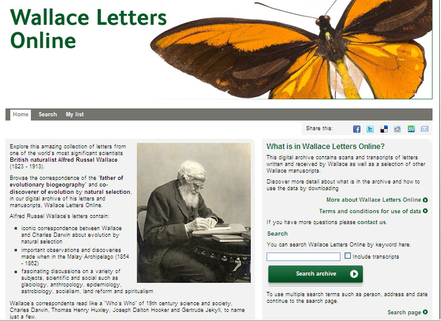

Contact: Julia Damerow (digitalhpscon@gmail.com)
Wallace Correspondence Project
The Wallace Correspondence Project seeks to locate, digitize, catalogue, transcribe and interpret all surviving letters to and from the great 19th century naturalist Alfred Russel Wallace (1823-1913). Additionally, letters from Wallace's contemporaries, like Darwin and Huxley, which make mention of him are also included, as are a selection of other important manuscript documents which are not letters. Wallace is the 'father' of evolutionary biogeography and the co-discoverer with Charles Darwin of the process of evolution by natural selection. He also made many other important contributions to subjects as diverse as glaciology, land reform, anthropology, ethnography, epidemiology, and astrobiology.
For more information on the full extent of the project, access the Wallace Correspondence Project home page, or browse the online archive of Wallace's correspondence.
Participants:
George Beccaloni, Project Director, The Natural History Museum, London (g.beccaloni@nhm.ac.uk)
Judith Magee, Project Manager, The Natural History Museum, London (j.magee@nhm.ac.uk)
Caroline Catchpole, Archivist, The Natural History Museum, London (c.catchpole@nhm.ac.uk)
Website URL:
Logo:
Pictures:
